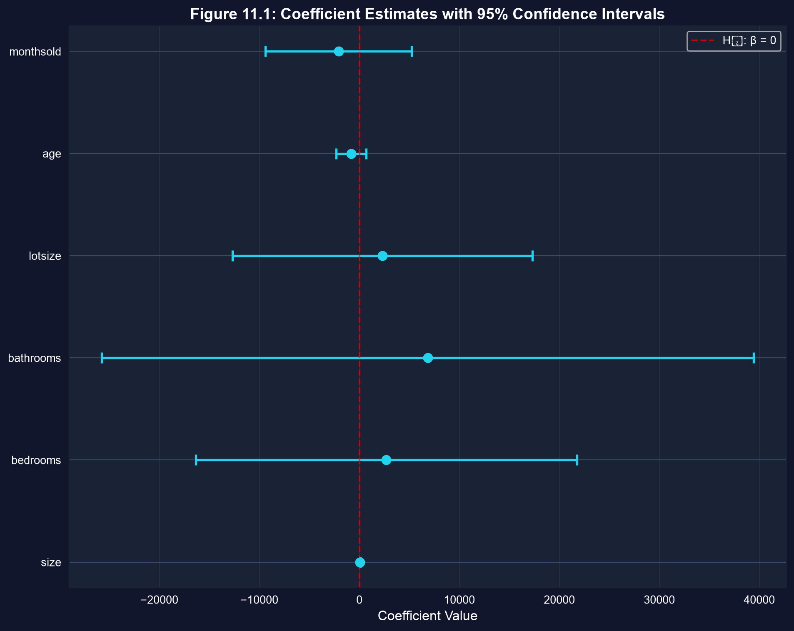
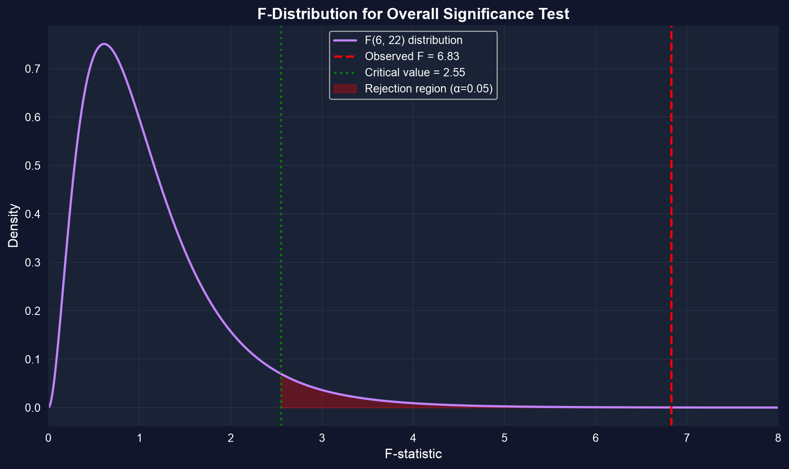
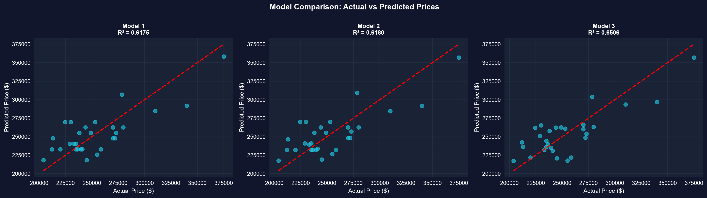

第I幕 · 緊張
カリフォルニア州デービスの住宅29件の価格を、面積、寝室数、浴室数、敷地面積、築年数、販売までの月数に回帰します。
\[\text{price} = \beta_1 + \beta_2\,\text{size} + \beta_3\,\text{bedrooms} + \cdots + \beta_7\,\text{monthsold} + u\]
どの係数もゼロではない値として返ってきます。しかし点推定値は証拠ではありません——これらの効果のうち、どれが単なる標本抽出の雑音にすぎないのでしょうか。 推測とは、シグナルを偶然から見分ける方法のことです。
* ** *** が 10%、5%、1% の閾値を一目で示す追加するパラメータ1つごとに自由度を1つ消費します——標本が29件のとき、その代償は現実的です。
第II幕 · 調査
!pip install -q pyfixest # pyfixest isn't preinstalled in Colab (-q = quiet)
import pandas as pd # tabular data
import pyfixest as pf # OLS with R-style formulas
url = "https://raw.githubusercontent.com/quarcs-lab/data-open/master/AED/AED_HOUSE.DTA"
data = pd.read_stata(url) # 29 Davis, CA house sales (1999)
fit = pf.feols("price ~ size + bedrooms + bathrooms + lotsize + age + monthsold",
data=data) # multiple regression, intercept auto-added
fit.summary() # coefficients, SEs, t, p for all 7 parameterssize だけ——1平方フィートあたり \(\$68.37\)ゼロでないことと有意であることは同じではありません：6つの傾きのうち5つは、ゼロであっても十分あり得ます。
\[se(b_j) = \frac{s_e}{\sqrt{\sum_i \widetilde{x}_{ji}^2}}, \qquad \widetilde{x}_{ji} = x_j \text{ を他のすべての回帰変数で残差化したもの}\]
\(se(b_j)\) は、モデルの当てはまりが良いとき（\(s_e\) が小さいとき）、そして \(x_j\) が他の回帰変数にはない変動を持っているときに縮小します。より大きな住宅ほど寝室数が多いため、残差化の後に bedrooms はほとんど残りません——だからその標準誤差は膨れ上がります。
\(n=29\) で予測変数が相関している場合、推定値は構造的に不正確になります——データは限界まで引き伸ばされているのです。
import pandas as pd # tabular data
import pyfixest as pf # estimation
from scipy import stats # t critical value
url = "https://raw.githubusercontent.com/quarcs-lab/data-open/master/AED/AED_HOUSE.DTA"
data = pd.read_stata(url) # load the 29 houses
fit = pf.feols("price ~ size + bedrooms + bathrooms + lotsize + age + monthsold", data=data)
fit.confint() # 95% CI: b_j ± t(n-k, 0.025) · se(b_j)
t_crit = stats.t.ppf(0.975, df=29 - 7) # critical value from T(22) ≈ 2.074size の区間だけ
各バーは95%信頼区間です。size は完全にゼロより上にあり、他のすべての区間はゼロをまたいでいます。
size：\([\$36.45,\ \$100.29]\)——下限ですら1平方フィートあたり \(\$36\) を加えます。ゼロを除外する区間は、5%での有意性そのものです。
import numpy as np # arrays
# from the fitted model: b_size = 68.37, se_size = 15.39, df = 22
fit = pf.feols("price ~ size + bedrooms + bathrooms + lotsize + age + monthsold", data=data)
b, se = fit.coef()["size"], fit.se()["size"] # estimate and its standard error
t = (b - 50) / se # H0: beta_size = 50 → t = (68.37 - 50)/15.39
p = 2 * (1 - stats.t.cdf(abs(t), df=29 - 7)) # two-sided p-value from T(22)
print(f"t = {t:.2f}, p = {p:.3f}") # t = 1.19, p = 0.245 → fail to rejectbedrooms、bathrooms、lotsize、age、monthsold を1つずつ検定することは、それらが相関していることを無視しており——偽の「有意」が生じる確率を膨らませます。
その代わりに、2つのモデルを残差平方和で比較します：
\[F = \frac{(\text{RSS}_R - \text{RSS}_U)/q}{\text{RSS}_U/(n-k)} \sim F(q,\, n-k)\]
制約付きモデルは変数を落とし、制約なしモデルは残します。それらを落とすと当てはまりは悪くなるのでしょうか。
import numpy as np # arrays
from scipy import stats # F distribution
full = pf.feols("price ~ size + bedrooms + bathrooms + lotsize + age + monthsold", data=data)
size_only = pf.feols("price ~ size", data=data) # restricted: drop the other 5
rss_u, rss_r = np.sum(full._u_hat**2), np.sum(size_only._u_hat**2)
q, n_k = 5, 29 - 7 # 5 restrictions, 22 residual df
F = ((rss_r - rss_u) / q) / (rss_u / n_k) # joint F-statistic
p = 1 - stats.f.cdf(F, q, n_k) # upper-tail p-value
print(f"F({q},{n_k}) = {F:.2f}, p = {p:.3f}") # F = 0.42, p = 0.832
\(F(q,\,n-k)\) 分布は右に歪んでおり、正の値をとります。私たちは右裾の遠い部分で棄却します。
size を超えて加える分には、まとめて冗長です。棄却しない。モデルは機能しています——しかしその仕事はすべて size 単独が担っているのです。
第III幕 · 解決
size を \(68.37^{***}\) と報告し、残りは星印なしにします——読み手は証拠がどこにあるかを一目で見て取れます。ここではロバスト標準誤差はほとんど動きません（\(\$15.39 \to \$15.36\)）：軽度の不均一分散です。

実際の価格と予測価格。size のみのモデルは完全モデルをほぼ正確に追従しています。
\(R^2\) は変数が増えると常に上がります。自由度調整済み \(R^2\) は複雑さに対して料金を課します。パラメータに見合う働きをするモデルを選びましょう。
異論。 「5つの変数は非有意だ——だから寝室数や浴室数は価格に影響しない。」
応答。 棄却しないことは受容することではありません。 \(n = 29\) で予測変数が一緒に動く場合、データはこれらの効果を単純に解像できないだけであって——それらがゼロだということではありません。より大きく、共線性の低い標本であれば解像できるかもしれません。
推測は、この標本が支持できる範囲を定量化します。小さく相関したデータは、見かけよりも少ないことしか支持しません。
size 単独で十分です。